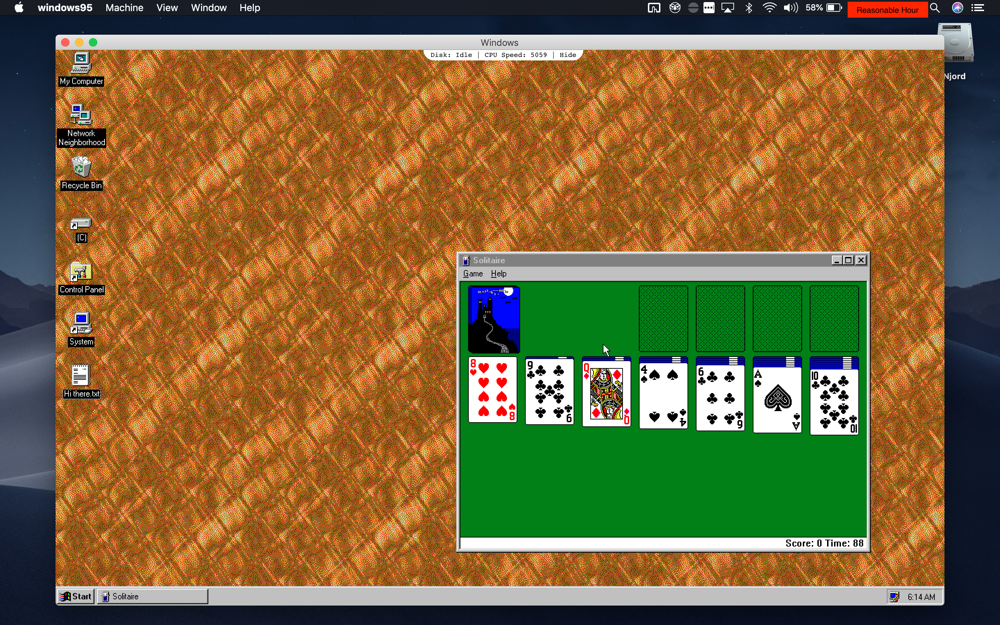

The New Package Managers
From the time I first got Linux to boot on a laptop I had, I became entranced with the idea of a system package manager. From Wikipedia:
A package manager or package management system is a collection of software tools that automates the process of installing, upgrading, configuring, and removing computer programs for a computer’s operating system in a consistent manner.
Basically, a package manager lets you install software in a uniform way - on Ubuntu Linux,
apt install 7zip. On CentOS Linux, yum install 7zip. On OpenSUSE Linux zypper install 7zip. No
more double-checking that you’re installing it from the right source, no more “Choose where you want
to install this”, no more “oh crap oh crap I forgot to uncheck the ‘Install NotMalware™️ Toolbar’”.
Clean. Uniform. It just knows how to install it.
Around this time I also learned about the Mac package managers Homebrew and MacPorts, and came to use them religiously. I used them without thinking about what they were or how they did it, and probably assumed that they worked the same way as the Linux ones. I just enjoyed that package managers were easy and worked, and that I had one on my OS. It wasn’t until I ran FreeBSD that I came to understand even the basics of how package managers really worked.
The Linux Answer #
Let’s say we were going to build a system to do the same thing - have a simple platform that would manage programs on a system for the user. You’re probably thinking along the lines of one of the various app stores out there - you, a trusted party, host all the software that people will download in a nice, easy-to-install format, and people can download and install it as they please. All you need is a place to host it. And in the meantime, anyone else can run their own repository of software next to yours, and as long as they have the same format, it’ll be fully-compatible.
This isn’t a bad solution - in fact, in some ways it’s utterly brilliant. Having a central repository makes for lots of opportunities. You can have specific repositories curated for compatibility against a specific version of a specific operating system. Everyone downloads from a trusted source without having to think about it. Third parties who don’t want to share their code with you can host their own. If someone needs a bit of software from a different repo, all they have to do is subscribe to it. There are plenty of benefits.
But there are downsides to this approach too. There’s a central point of failure - your servers - if they go down, all the people using your repository are SOL. If someone won’t let you use your repository for their software (or you don’t want their software (or both)), and don’t want to host their own - congratulations - your beautiful package manager becomes useless in that scenario. Further there is a lot of software out there, and hosting all of it for countless people to all use at the same time gets expensive, which is a bit of an issue if you don’t have servers, bandwidth, or money.
Though Linux didn’t implement this sprawling infrastructure out of the gate, the basic tooling for
distributing and installing these packages was first implemented around 1994 (I’m referring here to
the creation of dpkg).
Recently, starting in 2013, two big players arrived on the scene, with similar promises but very different implementations - Docker and Snappy. Docker became the symbol of containerization, a practice involving packaging up every single thing needed to run a piece of software, and running it in what is basically a virtual-machine-but-not-really. Promising optimal reliability, reproduceability, and integration with sophisticated machine orchestration tools, it’s become a popular and different means of addressing many older problems by taking isolation between “packages” to relative extremes. Snappy, on the other hand, takes portability by building itself a little sandbox with everything it needs and shipping that around on-demand, crossing Linux distributions, computer architectures, and device types in the process while bypassing many of the limitations of containerization, especially as they apply to desktop apps.
Linux Dishonorable Mentions #
None, really. The GNU folks have collectively put a lot of time and effort into building a system that works both easily and well (most of the time - looking at you, OpenSUSE) and even when the result hasn’t been great, their hearts are usually in the right place, even if I sometimes feel they’re a bit too aggressive about their GNU ideology in some places.
The BSD Answer #
For BSD, many of those benefits were meager, and the downsides were more serious. Where Linux had a genuine need for versatility given the vast number of different distributions and their vast differences, BSD had relatively few public distributions and more consistency within an operating system Where commercialized Linux distributions (or even just popular distributions that make a lot through donations) were able to run their dedicated repositories, such a thing was non-trivial for BSD, and an alternative that was more decentralized would be easier to implement and maintain.*
* I’m making some guesses about why the ports tree was adopted based on its relative technical merits, especially as they applied circa 1993. Honestly, I suspect it was added because it was “useful at the time” and it happened to work well for their needs.
So instead, in 1993-1994, FreeBSD developed the beginnings of the ports tree (really called the ports collection, but I prefer tree, because that’s how it’s structured). The basic idea was that, instead of downloading the software itself, you’d download the source code yourself, and compile it for your own machine, using only a simple script called a Makefile. This had the benefit of supporting multiple architectures, without needing to compile for all of them ahead of time, and allowing changing of advanced compilation options to suit the needs of the users and allowing greater control, all using just the version control software (subversion) that was already widely used for collaborating on code.
Over time, it was realized that ports didn’t necessarily need to build the package from source - after all, they were basically just arbitrary scripts in the form of Makefiles. This meant that they could be adapted to install proprietary software, that may not be packaged in an expected way, from an open-source repository that you had a copy of on your machine without necessarily violating licenses.
Later, Arch Linux, Gentoo Linux, and other open-source BSD operating systems would adopt ports trees inspired by, or even descended from, the original FreeBSD ports tree. This wound up being a great feature for advanced users, because of its huge flexibility and the fact that it wasn’t dependent on a single repository being up at any given time.
BSD Dishonorable Mentions #
- It took forever (2012) for FreeBSD to get a good native binary package manager. Though I prefer the ports tree, not having one can alienate new users. What’s more, it’s generally lacking compared to its Linux counterparts.
This is offered with the caveat that the BSD community generally has less resources than the Linux community to invest in endeavors like this. The pointless infighting between types of BSD (well, really just FreeBSD and OpenBSD, everybody likes NetBSD) also doesn’t help the platform as a whole.
Package Managers come to macOS #
In 2000, Fink arrived on the scene for macOS.
Built on top of the dpkg utility from Debian Linux:
With the help of dpkg, it maintains a separate directory hierarchy. It downloads original source releases, patches them if necessary, configures them for Darwin and compiles and installs them. The information about available packages and the necessary patches (the “package descriptions”) are maintained separately, but are usually included with this distribution. The actual source code is downloaded from the Internet as necessary.
Like its Linux counterparts, it used dedicated repositories (often of source code rather than binaries) to port, compile, install, and maintain common open-source utilities for macOS. It hooked into many of the source code distributions already out there (including FreeBSD’s own ports tree) in order to install and manage software for macOS with almost none of the necessary infrastructure for doing so, by integrating the repositories already maintained by the open-source community at large and providing an “adapter” to macOS by rebuilding the Linux binaries using macOS build tools.
Hot on Fink’s heels, in 2002, MacPorts was created. As the name implies, it was based on the idea of the FreeBSD ports tree, but instead targeting macOS. Like the ports tree, it installed everything by building from the source code, with a depth of configuration options available to suit the needs of the user. It quickly became popular among power users and developed a following of contributors, and to date has more packages available than any other mac package manager.
In 2009, the now most-popular mac package manager was announced, Homebrew. It was basically the ultimate mutt, incorporating ideas from all the package mangers up to that point about how packages should be managed, and had the benefit of being built on git. Its popularity took off, in 2013 being one of the most popular repositories on GitHub. Like BSD, it used a repository of scripts to define how to install software, but as was more common in the Linux world, it typically downloaded pre-built binaries. and supported adding additional repositories. Like ports, it keeps local copies of all its scripts using version control tools, but like traditional package managers, allows one to subscribe to additional repositories, and manages those using an advanced feature of git. It tries to take the best of all worlds, and in my opinion, does a damn good job of it.
macOS Dishonorable Mentions #
- App Store: A cynical and half-hearted attempt to bring Apple’s iOS cash cow to the desktop while simultaneously making life more difficult for users and developers alike, and generally being a flop.
- Swift Package Manager: Released with Swift 3.0, this package manager couples being the last to market behind CocoaPods and Carthage while simultaneously being more obtuse and less reliable.
Really, it seems like Apple just can’t wrap their heads around how to make a good package manager… Or maybe the open-source community are the only people pure enough in purpose to be able to do so successfully without needing to establish a total monopoly on their ecosystem to do so.
Windows #
Honestly, I can’t muster much more than an honorable mention for Windows in the package management area, but I also don’t want to leave it out. That’s not to denigrate the people working on it at all - they do great work, and as someone who fell in love with package managers as soon as I found them, the work they do on bringing package managers to an ecosystem that seems to think it’s too good for them is greatly appreciated. That said, nothing that’s come out of it has been particularly impressive or reliable when compared to the *NIX counterparts.
Windows Honorable Mentions #
- Various managers or environments for FOSS packages in Windows -
Cygwin,MSYS2,wpkg. - NuGet: The much needed package manager for Windows software development. Originally started as an open-source project, but the best one available, to the point that it started being included in Visual Studio by default.
- Chocolatey: The lonely missing package manager for Windows, built on top of NuGet. Like homebrew, it’s open-source and free, but it doesn’t have anywhere near the same community involvement (despite having comparatively massive market share 🤔) and just isn’t as mature as those on other operating systems in terms of end-usage. It’s a similar to homebrew in the idea of how its install scripts work, but not being built with the same flexibility via git, it just doesn’t wind up being as strong.
On the Off Chance the Maintainer I Ran Into in IRC is Reading This #
One time you stopped into the Freenode #freebsd IRC channel when you were looking for advice about
running some of the choco servers on FreeBSD. Despite saying some perhaps mean things above, I
really do admire the hard work you folks put in making a package manager for an ecosystem that’s
just not receptive to it. It made my life loads easier when I worked in that ecosystem. Keep on
doing your great work - Windows needs you, even if it doesn’t realize it.
Windows Dishonorable Mentions #
- Windows Store: Like the Mac App Store, but worse in just about every way. A cynical attempt to monopolize software distribution on their own operating system (Remember Windows 10 S?) while rolling back quality control to such an extent that there are competing paid “apps” that download free software. It would be funny, if it weren’t so sad.
To reiterate:
maybe the open-source community are the only people pure enough in purpose to be able to do so successfully without needing to establish a total monopoly on their ecosystem to do so.
Musing #
I don’t like ending on that note, so I’m going to write some pseudo-stream-of-conscousness stuff to give the illusion of having learned something from this long-winded and esoteric post.
Obviously, I’m a pretty big fan of homebrew. I’ve long been impressed by the mac developer community’s tenacity in developing for the operating system - it seems ironic that one of the operating systems that most jealously guards its walled garden ecosystem has such a rich community of people experimenting to see what they can do with it. Maybe it’s because of the BSD roots that become apparent once you dive in, and this community takes on some of the properties of the other from those shared roots. Maybe Apple’s limitations of the system encourage innovation to get around them, or to see how they can make the most of those constraints. Or maybe somebody just had a clever idea that happened to grow up well, and happened to be working on a mac at the time.
As far as FreeBSD and the ports tree goes, it really was a satisfying and useful way of managing the operating system. Maybe it was just my intrigue in the subject matter, but it was satisfying to compile my own programs, attaching all the settings I wanted, choosing which libraries they used, and manually setting them up to work just the way I wanted. I’ve never driven a manual transmission, I have to imagine it’s a similar feeling to what has been described to me - getting closer to the machine and getting a closer feel for what it’s doing, having a greater deal of control to go along with it. It’s something MacPorts maintained well, but the spirit of which seems to have been lost in homebrew on the mac side of things. Even so, I have to wonder how it’s going to hold up as containerization continues to evolve, and purpose-build not-quite-virtual machines become more common, while FreeBSD gets left in the lurch because it lacks proper docker compatibility.
Speaking of which, containerization is getting ever bigger in my field which makes me wonder how the split between server and desktop management of software dependencies is ultimately going to resolve itself. Are we just going to see bigger splits, where containers running in VMs hundreds of miles away become the new racks of servers, while stripped down carbon copies of google chrome coupled with a handful of javascript become the new desktop apps? Or will things re-converge into some new form that somehow takes the best of both, like homebrew did with ports trees and binary repositories?
And now, for your entertainment, Windows 95, being run raw though a javascript renderer provided by Chromium.
